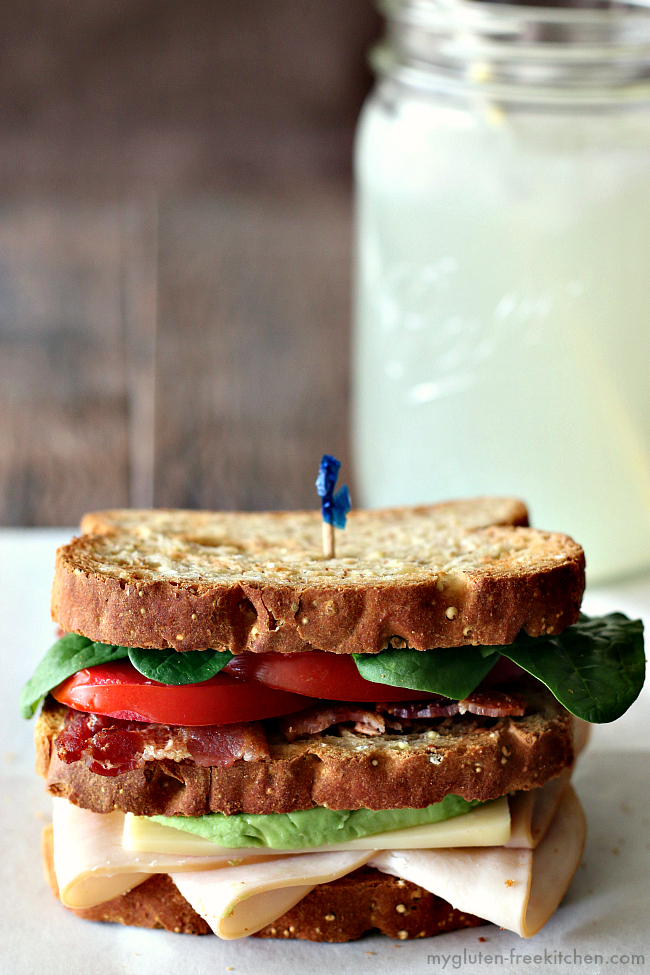

Overview
This site is designed to show you all the ways that you can make your family's cooking without compromising taste. Soon, you'll be able to make your delicious family meals able to be enjoyed by everybody at the table.
Bread
Sandwiches

Bread is the first thing everybody thinks about when having a GF diet. There really isn't anything that will compare to regular whitebread. GF bread is drier, crumblier, and more expensive, so don't expect to be relying on the sandwich bread to be the best part of the sandwich. In my 8 years of experience, it is the thing I miss most, but there are a lot of solid options out there for you.
Lots of large grocery stores have gluten free bread options, and my top two are Canyonhouse and Schar; however, Udi's has been around for a while and they've been improving. In terms of sandwich shops, Jersey Mike's and Firehouse use Udi's and Schar respectively, and they both have processess in place to reduce as much cross-contamination as they can. No restaurant will be able to reduce all gluten. Make sure, no matter what restaurant that you go to, that you tell them that you have a GF allergy.
Now, you may be thinking that making your own bread may be a great alternative. I want to encourage anybody to try making their own bread at least once, just to understand the challenges of using GF flour and understanding its limitations.